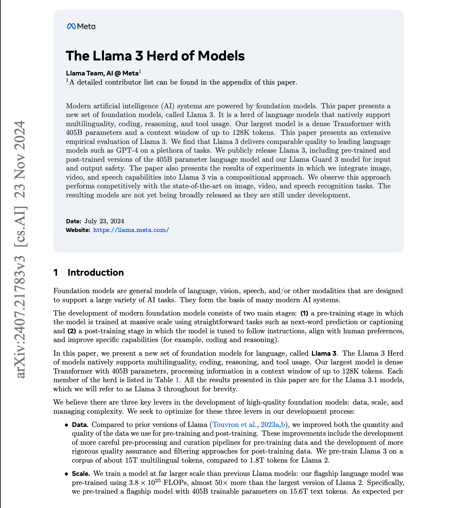

Paper notes: The Llama 3 Herd of Models
Last weekend I read Meta's paper, "The Llama 3 Herd of Models", which describes how Meta trained Llama 3. Two things stood out: two architectural choices, and the infrastructure built to train the 405B model on 16,000 H100s.
Two architectural choices
Llama 3 adopts GQA with 8 key-value heads, which shrinks the KV cache during decoding.
During pre-training, document masking prevents tokens from attending across document boundaries. This improves data quality but introduces computational imbalance that the pipeline schedule has to absorb.
The cluster
Llama 3 was trained on 16K H100 GPUs. Each node has 8 GPUs connected with NVLink. The 405B run used a RoCE fabric, while the 70B and smaller models used NVIDIA Quantum2 InfiniBand; both fabrics use 400 Gbps interconnects between GPUs.
The RoCE fabric is a three-layer Clos network:
- Bottom layer — each rack holds 16 GPUs across two servers
- Middle layer — 192 racks are joined by cluster switches into a pod of 3,072 GPUs with full bisection bandwidth
- Top layer — eight pods connect through aggregation switches into a 24K-GPU cluster, of which the 405B run used 16K
Because bandwidth degrades at the top layer, both the model parallelism strategy and the training job scheduler are topology-aware: communication-heavy dimensions (like TP) are placed close together, and latency-tolerant ones (like DP) are pushed outward, so traffic between pods stays minimal.
4D parallelism
The parallelism strategy is 4D: [TP, CP, PP, DP]. Each dimension carries its own trade-offs.
Pipeline parallelism. The schedule makes N — the number of micro-batches per batch — freely tunable, and one transformer layer is removed from each of the first and last stages to balance the pipeline. At large scale, where batch size is capped, the pipeline can run fewer micro-batches than the number of stages, or more micro-batches to hide point-to-point communication — landing somewhere between DFS and BFS scheduling for the best trade-off between communication and memory efficiency.
Context parallelism. The sequence is chunked into 2 × CP pieces, and the i-th CP rank receives both the i-th and the (2 × CP − 1 − i)-th chunk, so every rank gets one lightly-loaded chunk and one heavily-loaded one. The implementation uses all-gather rather than a ring, for two reasons: all-gather makes it easier to support different attention masks (like the document mask above), and because GQA keeps the key/value tensors much smaller than the query tensor — with attention costing O(S²) against all-gather's O(S) — the communication is cheap enough to leave exposed.
Ordering. The four dimensions are ordered by communication demand, from most bandwidth-hungry inward to most latency-tolerant outward. TP in particular is constrained to within a single node.
That's how Meta fit the 405B Llama 3 training run onto 16K H100 GPUs.
